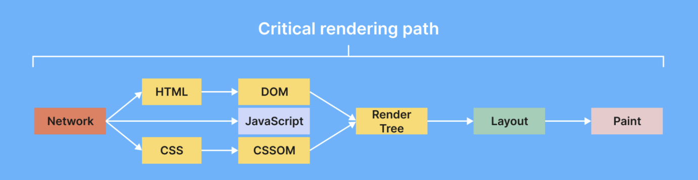
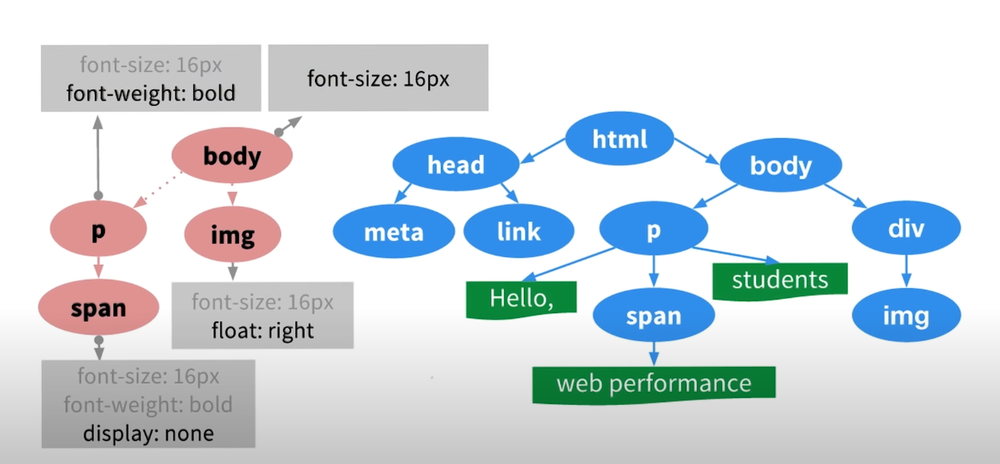
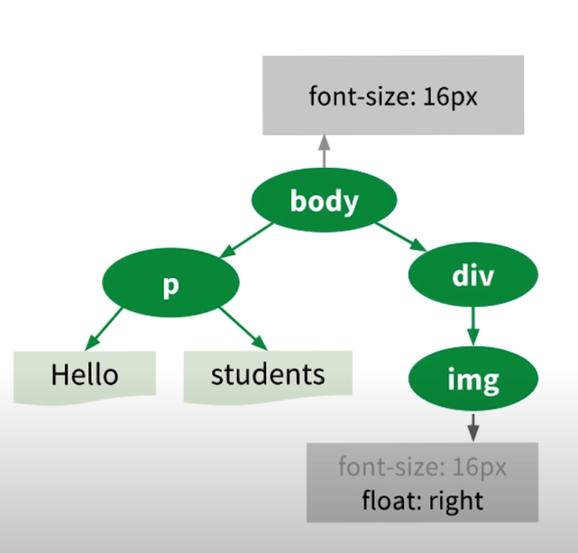

CSS Object Model - CSSOM
1. Какво е CSSOM и как работи? [52] [53] [55] [56]
CSS обектният модел (CSSOM) е набор от API за четене и модифициране на информация, свързана със стила (CSS) на документ. С други думи, подобно на начина, по който DOM позволява структурата и съдържанието на документа да бъдат прочетени и модифицирани от JavaScript, CSSOM позволява стилът на документа да бъде прочетен и модифициран от JavaScript.
За да си отговорим на въпроса “Как работи” трябва да погледнем на нещата по-отдалеч.Нека разгледаме какво е critical rendering path или критичен път на рендериране.
Както е показано на снимката по-горе имаме няколко стъпки в критичния път на рендериране.Нека ги разгледаме:
-
DOM Дърво
Всяко JavaScript обектно възелче се създава, когато двигателът за изобразяване получи HTML елементи като body, div и други. След създаването на възел, се създава структура подобна на дърво с помощта на тези възли. Както знаем HTML елементите са вложени един в друг, двигателят за изобразяване възпроизвежда тази вложена структура чрез възли в DOM дървото. Това помага за повишаване на продуктивността на браузъра за ефективно управление на уеб страницата. Дървото на DOM се състои от най-горния елемент и има рамена, прикачени според вложеността в HTML документа.
-
CSSOM
CSSOM означава CSS Object Model или CSS Обектен модел. Когато двигателят за изобразяване конструира DOM от HTML файла, той среща < link > таг за връзка, който свърза css документа към html документа. След завършване на построяването на DOM дървото, CSS се чете от всички източници, както външни, така и вътрешни,inlne и стилове на user-agent. Всяко възелче в потребителското дърво се отнася до елемент на стил, който се прилага към DOM елемент. Браузърът също притежава своя собствен user-agent stylesheet. Когато се създава CSS обектен модел, първо се създават CSS свойства за DOM елемента чрез заместване на user-agent stylesheet-a. Ако свойството на CSS за HTML елемент не е дефинирано нито в стиловете на разработчика, нито в браузъра, то наследява свойството на родителския елемент.
Render Tree
Фигура 2: Render Tree [49] За да конструираме Render дървото трябва да почнем от коренът на DOM дървото,което в нашия случай е <html> тагът и след това трябва да проверим дали има някакви css правиал,които трябва да се приложат на този елемент.Друго важно нещо за Render дървото е, че на него се изобразява само видимо съдържание,т.е. ако имаме елемент , на който displaydisplay css свойството му е зададено на "none",то този елемент няма да бъде изобразен в Render дървото. Нека да продължим с примера.Сега се намираме на < html > елементът.Тъй като < html > и < head > таговете не съдържат видимо съдържание и затова ги махаме.След това имаме < body > и го копираме,заедно с неговия стил.За лявата страна имаме <p>,който съдържа видимо съдържание, но <span> елементът има "display:none" и затова се маха от Render дървото.Копираме "Helo" и "students".<div> и <img> съдържат видимо съдържание и затова ги копираме.Резултатът е :
Фигура 3: Render Tree резултат [50] -
Layout
CSSOM означава CSS Object Model или CSS Обектен модел. Когато двигателят за изобразяване конструира DOM от HTML файла, той среща таг за връзка, който свърза css документа към html документа. След завършване на построяването на DOM дървото, CSS се чете от всички източници, както външни, така и вътрешни,inlne и стилове на user-agent. Всяко възелче в потребителското дърво се отнася до елемент на стил, който се прилага към DOM елемент. Браузърът също притежава своя собствен user-agent stylesheet. Когато се създава CSS обектен модел, първо се създават CSS свойства за DOM елемента чрез заместване на user-agent stylesheet-a. Ако свойството на CSS за HTML елемент не е дефинирано нито в стиловете на разработчика, нито в браузъра, то наследява свойството на родителския елемент.
4.1 Layout Trashing
Layout thrashing е процес, при който браузърите пренареждат или пренаписват уеб страницата множество пъти, преди да се зареди страницата. Всяки път, когато страницата се опреснява, свързаните елементи на страницата като размер, форма и позиция се заместват от предишните оформителни събития. Layout thrashing е силно засегнат от DOM, CSSOM и дървото на изображението. Цената на оформянето (layout cost) е изчислението на изчислителния ресурс, необходим на уеб браузъра, за да оформи, позиционира и нарисува възлите на дървото на изображението. Цената на оформянето зависи от фактори като броят на елементите на уеб страницата, присъстващи за оформянето, и сложността на процеса на оформяне. Сложността на процеса на оформяне се определя от следните фактори:
- Често използване на flexbox.
- Наличието на анимация на страницата.
- Не пренареждане на голяма част от DOM за малки промени в елемента.
-
Paint
На този етап, браузърът преобразува изчисленията, направени по време на фазата на оформяне, в реални пиксели на екрана. При фазата на рисуване, елементите се запълват пиксел по пиксел на екрана. Това запълване с цветове се извършва на множество повърхности, наречени слоеве (layers). Дървото на оформянето и дървото на слоевете се комбинират, за да създадат записи за рисуване на елементите на екрана в различни слоеве. Рисуването на елементите може да се извърши по два начина:
- Глобално: При глобалния метод цялото дърво се рисува наведнъж.
- Инкрементален ред: При този метод се рисуват само тези региони, които не засягат останалата част от дървото.
Когато е необходимо да се прерисува само определен регион, се използва инкременталният ред за рисуване. Върху региона, който трябва да бъде променен, се инициализира правоъгълник, чрез който браузърът може лесно да идентифицира региона, който изисква репродукция, и този регион се рисува без да се нарушава останалата част от дървото.
-
Composition
На стъпка на композицията, слоевете, създадени в стъпката на рисуването, на които са нарисувани елементите, се комбинират, за да се покаже окончателният резултат на екрана. Предимството на рисуването на елементите в различни слоеве е, че те се рисуват на редовна основа, и такива промени могат да се осъществят лесно, без да се нарушават другите елементи, тъй като всички те съществуват на различни слоеве. Различните слоеве имат различни елементи, нарисувани върху тях. За да се види окончателният резултат на екрана, тези слоеве трябва да бъдат комбинирани според позицията на елементите в дървото на изображението. Слоевете трябва да бъдат позиционирани в подходящ ред, за да се избегне застъпването на елементите.
2. Интефейси[67]
CSSStyleDeclaration[57]
Интерфейсът CSSStyleDeclaration представлява обект, който е блок за CSS декларация, и излага информация за стил и различни методи и свойства, свързани със стила.
Има три начина, по които можем да постъпим един CSSStyleDeclaration обект.
-
HTMLElement.style
Това е най-основният начин , по които можем да достъпим и манипулираме CSS свойства чрез JavaScript.HTMLElement.style се грижи за inline стиловете на елементите.
document.body.style.backgroundColor = “green”;На горния пример сменяме CSS свойството background-color на “green”.За изписване на CSS свойства в JavaScript се използва camelCase конвенцията, както можем да видим от примера по-горе ( background-color става backgroundColor ) .Изключение от това правило прави единствено float, понеже float е запазена дума в JavaScript.Вместо това CSS свойството float e заменено с cssFloat.
Ето и един малко по-сложен Пример:
Използването на HTMLElement.style прави сменянето на стиловете лесно, но има един проблем - както споменахме по-горе работи само за inline стилове на елементите.Това става ясно като изпълним по-долния код:
Код 2: Задаване на стойност и логване в конзолата [2]document.body.style.backgroundColor = “lightblue”; console.log(document.body.style.backgroundColor);// “lightblue”На по-горният пример дефинираме backgroundColor свойството на body елементът и след това изписваме цветът на конзолата - “lightblue”.Всичко работи перфектно, но ако се опитаме да изведем стойността на backgroundColor свойство на същия body елемент няма да получим нищо, освен ако не сме дефинирали inline стил на елемента в HTML или през JavaScript.Например:
Код 3: Извикване на style върху елемент,който няма дефиниран inline стил [3]console.log(document.body.style.backgroundColor)//“”Горният пример връща празен string,защото нямаме дефиниран inline стил за body елементът.Това означава , че дори да имаме дефинирано свойството background-color в CSS стиловия лист, style елементът не може да го види.
Цъкнете някъде в това правоъгълниче ,за да видите как топката се мести!
Код 4: Код за топче [4]const ball = document.getElementById("bll"); const div = document.getElementById("bc"); function getPosition(el) { var xPosition = 0; var yPosition = 0; while (el) { if (el.tagName == "BODY") { // deal with browser quirks with body/window/document and page scroll var xScrollPos = el.scrollLeft || document.documentElement.scrollLeft; var yScrollPos = el.scrollTop || document.documentElement.scrollTop; xPosition += (el.offsetLeft - xScrollPos + el.clientLeft); yPosition += (el.offsetTop - yScrollPos + el.clientTop); } else { xPosition += (el.offsetLeft - el.scrollLeft + el.clientLeft); yPosition += (el.offsetTop - el.scrollTop + el.clientTop); } el = el.offsetParent; } return { x: xPosition, y: yPosition }; } div.addEventListener("click",getClickPosition,false); function getClickPosition(e){ var parentPosition = getPosition(div); var xPosition = e.clientX - parentPosition.x - (ball.offsetWidth/2); var yPosition = e.clientY -parentPosition.y -(ball.offsetHeight/2); var translate3dValue = "translate3d(" + xPosition + "px," +yPosition + "px,0)"; ball.style.transform = translate3dValue; } window.getComputedStyle()
Този метод връща CSSStyleDeclaration обект, който е само за четене.За разлика от HTMLElement.style, методът getComputedStyle() ни връща доста информация за самото CSS свойство, като също така работи както с inline стилове, така и с външни и вътрешни stylesheets.Нека разгледаме следният пример:
Код 5: Логване в конзолата на изчисления стил [5]//CSS код body{ background:papayawhip; } //javascript код console.log(window.getComputedStyle(document.body).background);//"rgb(255, 239, 213) none repeat scroll 0% 0% / auto padding-box border-box"Както виждате background краткото правило беше дефинирано чрез единствена стойност - papayawhip, но методът getComputedStyle() ни върна всички стойности, които се включват в краткото правило.Тоест за всяко кратко правило, getComputedStyle() ни връща стойностите по подразбиране за всички свойства, които не са дефинирани.
Има три еквивалентни начина,по които можем да достъпим свойствата чрез getComputedStyle():
Код 6: Начини за достъпване на свойство чрез window.getComputedStyle() [6]window.getComputedStyle(el).backgroundColor; window.getComputedStyle(el).[‘background-color’]; window.getComputedStyle(el).getPropertyValue(‘background-color’);Също така можем да извличаме стиловете и на псевдо-елементи чрез методът getComputedStyle.Може да срещнете следния код някъде:
Код 7: Извикване на методът getComputedStyle() в предишни версии на Firefox [7]window.getComputedStyle(body, null).backgroundColor;window.getComputedStyle(body, null).backgroundColor; Вторият аргумент “null” се подава, защото предишни версии на Firefox са изисквали задължително втори аргумент, но в днешно време не е задължителен.Вторият аргумент в днешно време се ползва именно за да посочим псевдо-елементът.
Нека имаме следната декларация на псевдо-елемент:
Код 8: Достъпване на псевдо-елементи [8]//CSS код .box::before { content:”Example”; display:block; width:50px; } //javascript код let box = document.querySelector(‘.box’); window.getComputedStyle(box,’::before’).width;//50px;CSSStyleSheet
За този интефейс ще си говорим в секцията "CSSStyleSheet"
StyleSheetList[58]
Интерфейсът StyleSheetList съдържа CSSStyleSheet обекти.Той може да се достъпи чрез document.style Sheets.
Променливи:
length - връща броят на CSSStyleSheet обектите в текущия StyleSheetList обект.
Методи:
item(index) - връща CSSStyleSheet обект,намиращ се на индекс index или null, ако не съществува обект на този индекс.
Може да използваме и document.stylesheets[i] ,за да взимаме CSSStyleSheet обект, намиращ се на индекс i.
StyleSheet[59]
Обект имплементиращ StyleSheet интерфейсът.Той представлява един базов клас , който се специализира по-дълбоко от CSSStyleSheet, като CSSStyleSheet го наследява.
Променливи:
disabled - bool стойност, която показва дали текущият StyleSheet е приложен или не.
Код 9: Използване на disabled променлива [9]var stylesheet = document.styleSheets[0]; stylesheet.disabled = true;В по-горния пример променяме disabled на true и по този начин деактивираме конкретния StyleSheet
stylesheet.href - връща адреса на конкретния StyleSheet
Код 10: Използване на href променлива [10]console.log(document.styleSheets.item(0).href); //“file:////C:/Windows/Desktop/example.css"media - връща MediaList обект
ownerNode - връща Node,който асоциира този StyleSheet с текущия документ.Най-често връща <link> или <style > елементи.
Код 11: Използване на ownerNode свойство [11]console.log(document.styleSheets[0].ownerNode);//object HTMLLinkElementparentStyleSheet - ако текущия StyleSheet e импортнат чрез @import правило връща StyleSheet oбектът ,който съдържа @import правилото.Ако stylesheet е бил добавен чрез <link> или принадлежи <style> елемент връща null.
title - връща string,представляващ заглавието на дадения StyleSheet.
Код 12: Използване на title променлива [12]<head> … <style id=“myStyle” title = “This is an empty title”> </head> <script> var style_tag = document.getElementById(‘myStyle’) console.log(style_tag.sheet.title) </script>//This is an empty titletype - връща string,репрезентиращ езика на StyleSheet-a.
CSSStyleSheet[60]
CSSStyleSheet интефейсът представлява един CSS StyleSheet и чрез него може да се преглеждат и модифицира списъка с правила съдържащ се в конкретен StyleSheet.Наследява променливи и методи от StyleSheet.Един StyleSheet обект се създава и пъхнат в StyleSheetList обектът на документът автоматично от браузърът, когато дадени CSSStyleSheet е зареден.
Конструктор
CSSStyleSheet() - създава нов CSSStyleSheet обект.
let ss = new CSSStyleSheet();
ss.insertRule("a { color: red; }");
console.log(ss.cssRules[0].cssText);//a { color:red;}
Променливи
-
cssRules - връща CSSRuleList обект,който ни дава актуален списък от CSSRule обекти.
Код 14: Използване на cssRules променлива [14]let myRules = document.styleSheets[0].cssRules; for(i of myRules){ do_something; } ownerRule - връща кореспондиращото @import правило, ако StyleSheet-a e бил добавен към документа чрез @import правило,null иначе.
Методи
deleteRule(index) - трие правило на подаден индекс.
insertRule(rule,index) - добавя правило на конкретне индекс.Ако не е подаден индекс по подразабиране е 0.
replace(rules) - Асинхронно заменя съдържанието на един CSSStyleSheet обект(правилата) с нововъведение правила.Приема string,който репрезентира новите правила.Работи само върху CSSStyleSheet обекти, който са създадени чрез конструктора CSSStyleSheet();
var ss = new CSSStyleSheet(); ss.insertRule(“body{color:red;}”); ss.insertRule(“div{color:green;}”); console.log(ss.cssRules[0].cssText,ss.cssRules[1].cssText); //body{color:red;} div {color:green} ss.replace(“div{color:orange;}”); console.log(ss.cssRules[0].cssText); //div {color:orange;} console.log(ss.cssRules[1].cssText); //error - CSSStyleSheet има само едно правило в себе си.replaceSync(rules) - прави абсолютно същото нещо както и replace, само че го прави синхронно.
CSSRuleList[61]
Интерфейс ,който представлява обект от CSSRule обекти.
Променлвиви
length - връща int , представляващ броя на CSS правилата в текущия обект.
Методи
item(index) - връща CSS правилото, съответстващо на конкретен индекс.
CSSRule[62]
Базовият интерфейс CSSRule представлява едно CSS правило.Има неколцина правила ,които наследяват и специфицират по-нататък правилата:
CSSGroupingRule
CSSStyleRule
CSSImportRule
CSSMediaRule
CSSFontFaceRule
CSSPageRule
CSSNamespaceRule
CSSKeyframesRule
CSSKeyframeRule
CSSCounterStyleRule
CSSSupportsRule
CSSFontFeatureValuesRule
CSSFontPaletteValuesRule
CSSLayerBlockRule
CSSLayerStatementRule
CSSPropertyRule
В този реферат ще разгледаме само няколко от тях.
Променливи
cssText - връща string,който репрезентира правилото.
Код 15: Взимане на правило от стилов лист [15]var ss = new CSSStyleSheet(); ss.insertRule("body{color:red;}"); console.log(ss.cssRules[0].cssText);//"body { color: red; }"parentRule - връща обвиващото правило или null,ако няма такова.
Нека имам следния CSS:
Код 16: CSS код нужен за демонстрацията по-долу [16]@media (min-width: 500px) { .box { width: 100px; height: 200px; background-color: red; } body { color: blue; } }CSS кодът се състои от едно @media правило, с две вложени правила със селектори - ".box" и "body"
Код 17: JavaScript код ,показващ вложеното правило [17]let myRules = document.styleSheets[0].cssRules; let childRules = myRules[0].cssRules; console.log(childRules[0].cssText);//".box { width: 100px; height: 200px; background-color: red; }"На по-горния пример взимаме правилото отнасящо се до .box селекторът, за да покажем в следващия пример,че като извикаме parentRule на него,получаваме @media правилото.
Код 18: JavaScript код ,показващ нагледно parentRule променливата [18]console.log(childRules[0].parentRule.cssText); //"@media (min-width: 500px) { // .box { width: 100px; height: 200px; background-color: red; } // body { color: blue; } //}"type - връща константа,кошто репрезентира типа на правилото.Например 1 е CSSRule.STYLE_RULE ,4 e CSSRule.MEDIA_RULE,7 е CSSRule.KEYFRAMES_RULE,8 e CSSRule.KEYFRAME_RULE и така нататък.
За този пример ще ползваме CSS кодът от Пример 17.На него може да видим ,че имаме едно media правило и едно style правило.Със следния JavaScript код можем да изциклил масива с правила и изведем типа на всяко едно от тях:
Код 19: JavaScript код ,показващ type променливата. [19]var rules = document.styleSheets[0].cssRules; for(let i = 0 ; i < rules.length;i++){ console.log(rules[i].type); } //4 //1
CSSStyleRule[63]
Този интерфейс репрезентира едно CSS правило за стил.
Променливи
-
selectorText - връща селектор-а на даденото правило.
Код 20: JavaScript код ,показващ selectorText променливата. [20]let myRules = document.styleSheets[0].cssRules; console.log(myRules[0].selectorText); // a string containing "h1" -
style - връща CSSStyleDeclaration обект свързан с даденото правило.
Нека имаме следния CSS:
Код 21: CSS код, необходим за примера по-долу. [21]h1{ color:red; }В CSS правилото имаме едно просто style правило h1.Чрез следния JavaScript код можем да достъпим цвета посредством CSSStyleDeclaration обект:
Код 22 JavaScript код ,показващ style променливата [22]let myRules = document.styleSheets[0].cssRules; console.log(myRules[0].style); // CSSStyleDeclaration object console.log(myRules[0].style.color); // “red”
CSSGroupingRule[64]
Представлява всяко @ правило, което съдържа други правила в себе си.
Променливи
cssRules - връща списък с правилата, които се намират в текущото правило.
Код 23 JavaScript код ,показващ cssRules променливата [23]let mediarule = document.styleSheets[0].cssRules[0]; console.log(mediarule.cssRules);// [object CSSRuleList]
Методи
-
deleteRule(index) - трие правило на определен индекс в текущото правило.
Нека за следващия пример да използваме CSS кодът от Пример 17
Код 24: JavaScript код ,показващ deleteRule() методът [24]let mediarule = document.styleSheets[0].cssRules[0]; for(let i = 0 ; i < mediarule.cssRules.length;i++){ console.log(mediarule.cssRules[i].selectorText); //.box //body } mediarule.deleteRule(0); for(let i = 0 ; i < mediarule.cssRules.length;i++){ console.log(mediarule.cssRules[i].selectorText); }//bodyНа горният JavaScript код обхождаме правилата на media правилото и изкараме селекторите.След това трием правилото,намиращо се на индекс 0 и отново извеждаме правилата.Може да забележим ,че първото правило е липсва:
-
insertRule(rule,index) - вмъква правило на конкретен индекс.Ако индекс не е подаден,то по подразбиране е 0.
За следващият пример отново ще използваме CSS кодът от Пример 17
Код 25: JavaScript код ,показващ insertRule() методът [25]var mediarule = document.styleSheets[0].cssRules[0]; mediarule.insertRule(".back{color:red}",0); console.log(mediarule.cssRules[0].cssText);//“.back{color:red;}”На по-горния пример взимаме media правилото, след това добавяме ново правило в него на индекс 0 и изпринтваме правилото след това.
CSSKeyframesRule[65]
Интерфейсът CSSKeyframesRule описва обект, представляващ пълен набор от ключови кадри за CSS анимация. То съответства на съдържанието на цяло @keyframes at-rule.
Променливи
-
name - Връща името на съответното @keyframes правило.
Нека имам следния CSS код
Код 26:CSS код [26]@keyframes slidein { from { transform: translateX(0%); } to { transform: translateX(100%); } }Чрез следния JavaScript код можем да вземем името на @keyframes правилото
Код 27: Javascript код ,демонстриращ name променливата [27]et myRules = document.styleSheets[0].cssRules; let keyframes = myRules[0]; // a CSSKeyframesRule console.log(keyframes.name); // "slidein" -
cssRules - връща обект CSSRuleList,който съдържа правилата в текущото правило(както и при CSSGroupingRule)
Методи
-
appendRule(rule) - вкарва ново keyframe правило в текущото @keyframes правило.
Нека имаме следния CSS код
Код 28: CSS код[28]@keyframes slidein { from { transform: translateX(0%); } }Чрез по-долния код извеждаме броя на правилата в @keyframes правилото, след това добавяме ново правило и пак извеждаме големината:
Код 29: JavaScript,демонстриращ appendRule() методът[29]let myRules = document.styleSheets[0].cssRules; let keyframes = myRules[0]; // a CSSKeyframesRule console.log(keyframes.cssRules.length); keyframes.appendRule("to {transform: translateX(100%);}"); console.log(keyframes.cssRules.length); // a CSSRuleList object with two rules -
deleteRule(selector) - трие едно keyframe правило от текущото @keyframes правило.На метода се подава селекторът на keyframe правилото, което искаме да изтрием като стринг.
За по-долния пример ще използваме CSS кодът от Пример 29
Код 30: JavaScript,демонстриращ deleteRule() методът[30]let myRules = document.styleSheets[0].cssRules; let keyframes = myRules[0]; // a CSSKeyframesRule console.log(keyframes.cssRules.length);//1 keyframes.deleteRule("from"); console.log(keyframes.cssRules.length);//0 -
findRule(selector) - връща keyframe правилото,което кореспондира на подадения селектор.Ако такова не съществува се връща null.
За следващият пример отновео ще използваме CSS кодът от Пример 29
Код 31: JavaScript,демонстриращ findRule() методът[31]let myRules = document.styleSheets[0].cssRules; let keyframes = myRules[0]; // a CSSKeyframesRule console.log(keyframes.findRule(“from").cssText); //"0% { transform: translateX(0%); }"
CSSKeyframeRule[66]
Представлява едно правило единствено правило в един CSSKeyframesRule обект.
Променливи
-
keyText - представлява ключът на даден keyframe.Думата “from” е еквивалентна на “0%”,а “to” на “100%.”
За по-долния пример ще използваме CSS кодът от Пример 29
Код 32: JavaScript,демонстриращ keyText променливата[32]et myRules = document.styleSheets[0].cssRules; let keyframe = myRules[0].cssRules[0];// a CSSKeyframesRule console.log(keyframe.keyText);//“0%” -
style - връща CSSStyleDeclaration обект,асоцииран с текущото keyframe правило.
3. CSS Типов Обектен Модел - CSS Typed OM
CSS Типовият Обектен Модел е уеб стандарт, който въвежда JavaScript API за работа с CSS свойства и стойности по по-структуриран и безопасен начин.Той е част от Houdini проектът. Той предоставя програмен начин за взаимодействие с CSS, позволявайки на разработчиците да манипулират стилове и да извършват свързани с CSS операции с помощта на JavaScript. Важно е да се отбележи, че CSS Typed OM е развиващ се стандарт и поддръжката от браузърите може да варира.
Предимства
Вместо низове, стойностите се достъпват чрез JavaScript обекти, за да се улесни манипулиране на CSS.
Низовете водят до много грешки,ето и пример:
Код 33: JavaScript код, демонстриращ бъг в стария CSSOM[33]const box = document.querySelector('#box'); box.style.opacity = 0.3; console.log(box.style.opacity);//0.3 box.style.opacity += 0.1; console.log(box.style.opacity);//0.3Както можем да видим , второто принтене на конзолата не изкарва 0.4, а 0.3.Като преди дори извеждаше и "0.30.1"(конкатенация на стрингове).И в двата случая това не е очакваното поведение
Аритметични операции и смяна между мерни единици(Например px - > cm)
Закръгляне и ограничаване на стойностите
По-добра производителност(~30% по-бърз от стария CSSOM)
По-адекватна обработка на грешки
Поддръжка от браузърите
Ако искаме да проверим дали нашият браузър поддържа CSS Типовият Обектен Модел,можем да го направим чрез следния JavaScript код
if(window.CSS && CSS.number){
console.log(“CSSTOM supported”;
}
Базови знания
Когато говорехме за старият CSSOM, споменахме че има начин както да се манипулират стиловите листи, така и inline стиловете на елементите.В новият модел те си имат своите аналози
element.style се замества от element.attributeStyleMap
Код 35: JavaScript код, демонстриращ изполване на attributeStyleMap[35]var ball = document.getElementById("box"); ball.attributeStyleMap.set('opacity', 0.3); console.log(ball.attributeStyleMap.get("opacity").unit);//"number"CSSRule.style се замества от CSSRule.StyleMap
Код 36: JavaScript код, демонстриращ задаването на 'background' чрез styleMap[36]const stylesheet = document.styleSheets[0]; stylesheet.cssRules[0].styleMap.set('background', 'blue');
Новите интерфейси съшо така ни дават и много удобства, например:
el.attributeStyleMap.has('opacity')//Можем да проверяваме дали е зададена стойност за някое свойство
el.attributeStyleMap.delete('opacity')//можем да премахваме дадено свойство
el.attributeStyleMap.clear();// можем да премахнем всичи inline стилове на даден елемент
Видяхме как се set-ва дадено свойсвто, нека сега видим как се взима дадено свойство.
el.attributeStyleMap.get(‘margin-top’)//CSSUnitValue
Когато вземем стойност-та на дадено свойство ние взимаме обект, който се състои от две променливи - unit и value. Unit е стринг,който репрезентира мерната единица(px,cm и тн), а value е самата стойност.
el.attributeStyleMap.set('margin-top', CSS.px(10));
el.attributeStyleMap.get(‘margin-top’).value//10
el.attributeStyleMap.get(‘margin-top’).unit//‘px’
CSSNumericValue
CSSUnitValue - в себе си съдържа един тип(например "42px")
Използва се за прости типове, например 50%.Те могат да се създават директно чрез конструктора CSSUnitValue(), но по често се изпозлват CSS.* фактори методите:
Код 40: JavaScript код, репрезенриращ CSS.* фактори методите[40]CSS.number('10'); CSS.px(42); CSS.vw('100'); CSS.percent('10'); CSS.deg(45); CSS.ms(300);CSSMathValue в себе си съдържа повече от един тип
Код 41: JavaScript код, CSSMathValue интерфейсът[41]new CSSMathSum(CSS.vw(100), CSS.px(-10)).toString(); // "calc(100vw + -10px)" new CSSMathNegate(CSS.px(42)).toString() // "calc(-42px)" new CSSMathInvert(CSS.s(10)).toString() // "calc(1 / 10s)" new CSSMathProduct(CSS.deg(90), CSS.number(Math.PI/180)).toString(); // "calc(90deg * 0.0174533)" new CSSMathMin(CSS.percent(80), CSS.px(12)).toString(); // "min(80%, 12px)" new CSSMathMax(CSS.percent(80), CSS.px(12)).toString(); // "max(80%, 12px)"На по-горния пример виждаме всички интерфейси,които наследяват CSSMathValue и техните репрезентации.Например CSSMathNegate обръща знака на променливата,подадена му като аргумент.
Изчислени стилове
В новия CSS Типов Обектен Модел можем да взимаме и изчислени стилове(computed styles).За съжаление то не взима точно изчислените стилове например width:50% не се изчислява в px,а си остава 50%.
const el = document.getElementById("box");
el.attributeStyleMap.set('opacity', 0.5);
console.log(el.computedStyleMap().get('opacity').value);
Аритметични операции
Чрез новия обектен модел можем да правим аритметични операции
CSS.deg(45).mul(2) // {value: 90, unit: “deg”}
// умножение на 2 числа
CSS.percent(50).max(CSS.vw(50)).toString() // "max(50%, 50vw)” // максимум на две числа
CSS.px(1).add(CSS.px(2)) // {value: 3, unit: “px"}// събиране на две числа
CSS.s(1).sub(CSS.ms(200), CSS.ms(300)).toString()//"calc(1s + -200ms + -300ms)"
Преобразуване между мерните единици
Чрез новия обектен модел може да преобразуваме променливи от една величина в друга
var el = document.getElementById("box");
el.attributeStyleMap.set('width', '500px');
const width = el.attributeStyleMap.get('width');
console.log(width.to('mm').value); // CSSUnitValue {value: 132.29166666666669, unit: "mm"}
console.log(width.to('cm').value); // CSSUnitValue {value: 13.229166666666668, unit: "cm"}
console.log(width.to('in').value); // CSSUnitValue {value: 5.208333333333333, unit: "in"}
Равенсто
const width = CSS.px(200);
CSS.px(200).equals(width) // true
equals методът сравнява две числа и ако те си съвпадат връща true, false иначе,като типовете на двете променливи трябва да се еднакви
const width = CSS.px(500);
console.log(CSS.mm(132.29166666666669).equals(width)); // false
В горния пример и двата CSSUnitValue обекта имат еднакви дължини, но типовете им са различни, затова функцията връща false
CSS Трансформации
Трансформации чрез новия CSS Типов Обектен Модел се правят чрез CSSTransformValue,като му се подава масив от различни обект, като например CSSRotate, CSSScale и тн.
- Сложи мишката си над кубчето
- Започва да се върти!
- Махни си мишката
- Спира да се върти
- Ооо уау, има бутон за рестартине??
const box = document.getElementById("box");
const button = document.getElementById("box-button");
const measurer = document.getElementById("measurer");
button.addEventListener("click",function() {
transform[0].angle.value = 0;
box.attributeStyleMap.set('transform', transform); // commit it.
measurer.innerHTML = "0";
});
const rotate = new CSSRotate(0, 0, 1, CSS.deg(0));
const transform = new CSSTransformValue([rotate]);
box.attributeStyleMap.set('transform', transform);
let animationId; // declare animationId outside of event listeners
box.addEventListener('mouseenter', function() {
// start animation on mouse enter
animationId = requestAnimationFrame(function animate() {
box.attributeStyleMap.set('background-color','green');
transform[0].angle.value += 5; // Update the transform's angle.
box.attributeStyleMap.set('transform', transform); // commit it.
animationId = requestAnimationFrame(animate); // schedule next animation frame
measurer.innerHTML = "Rotating " + transform[0].angle;
});
});
box.addEventListener('mouseleave', function() {
// stop animation on mouse leave
cancelAnimationFrame(animationId);
measurer.innerHTML = transform[0].angle;
animationId = null;
box.attributeStyleMap.set('background-color','red');
});
console.log(button.attributeStyleMap.has('opacity'));
4. Заключение
Като цяло CSSOM и CSS Typed Object Model внасят значителни подобрения в начина, по който разработчиците работят със CSS стилове. Те дават възможност на разработчиците да манипулират динамично стилове, да имат достъп до изчислени стойности и да работят с въведени CSS стойности по по-стабилен, поддържаем и ефективен начин. Тези подобрения допринасят за по-безпроблемна интеграция на CSS и JavaScript, като допълнително подобряват възможностите и гъвкавостта на уеб разработката.
5. Списък с програмен код
-
Код 1: Достъпване на 'background-color' CSS свойсвтоИзточник : https://css-tricks.com/an-introduction-and-guide-to-the-css-object-model-cssom/#aa-inline-styles-via-element-style
-
Код 2: Задаване на стойност и логване в конзолатаИзточник: https://css-tricks.com/an-introduction-and-guide-to-the-css-object-model-cssom/#aa-inline-styles-via-element-style
-
Код 3: Извикване на style върху елемент,който няма дефиниран inline стилИзточник: https://css-tricks.com/an-introduction-and-guide-to-the-css-object-model-cssom/#aa-inline-styles-via-element-style
-
Код 4: Код за топчеИзточник: https://www.kirupa.com/html5/getting_mouse_click_position.htm
-
Код 5: Логване в конзолата на изчисления стилИзточник: https://css-tricks.com/an-introduction-and-guide-to-the-css-object-model-cssom/#aa-getting-computed-styles
-
Код 6: Начини за достъпване на свойство чрез window.getComputedStyle()Източник: https://css-tricks.com/an-introduction-and-guide-to-the-css-object-model-cssom/#aa-getting-computed-styles
-
Код 7: Извикване на методът getComputedStyle() в предишни версии на FirefoxИзточник: https://css-tricks.com/an-introduction-and-guide-to-the-css-object-model-cssom/#aa-getting-computed-styles-of-pseudo-elements
-
Код 8: Достъпване на псевдо-елементиИзточник: https://css-tricks.com/an-introduction-and-guide-to-the-css-object-model-cssom/#aa-getting-computed-styles-of-pseudo-elements
-
Код 9: Използване на disabled променливаИзточник: https://developer.mozilla.org/en-US/docs/Web/API/StyleSheet/disabled#value
-
Код 10: Използване на href променливаИзточник: https://developer.mozilla.org/en-US/docs/Web/API/StyleSheet/href#examples
-
Код 11: Използване на ownerNode свойствоИзточник: https://developer.mozilla.org/en-US/docs/Web/API/StyleSheet/ownerNode#examples
-
Код 12: Използване на title променливаИзточник: http://help.dottoro.com/ljuhsqla.php
-
Код 13: Използване на CSSStyleSheet() конструкторИзточник: https://developer.mozilla.org/en-US/docs/Web/API/CSSStyleSheet/CSSStyleSheet#sharing_stylesheets_with_a_shadow_dom
-
Код 14: Използване на cssRules променливаИзточник: https://developer.mozilla.org/en-US/docs/Web/API/CSSStyleSheet/cssRules#examples
-
Код 15: Взимане на правило от стилов листИзточник: https://developer.mozilla.org/en-US/docs/Web/API/CSSRule/cssText#examples
-
Код 16: CSS код нужен за демонстрацията по-долуИзточник: https://developer.mozilla.org/en-US/docs/Web/API/CSSRule/parentRule#examples
-
Код 17: JavaScript код ,показващ вложеното правилоИзточник: https://developer.mozilla.org/en-US/docs/Web/API/CSSRule/parentRule#examples
-
Код 18: JavaScript код ,показващ нагледно parentRule променливатаИзточник: https://developer.mozilla.org/en-US/docs/Web/API/CSSRule/parentRule#examples
-
Код 19: JavaScript код ,показващ type променливата.Източник: https://css-tricks.com/an-introduction-and-guide-to-the-css-object-model-cssom/#aa-accessing-keyframes-rules-with-the-cssom
-
Код 20: JavaScript код ,показващ selectorText променливата.Източник: https://developer.mozilla.org/en-US/docs/Web/API/CSSStyleRule/selectorText#examples
-
Код 21: CSS код, необходим за примера по-долу.Източник: https://developer.mozilla.org/en-US/docs/Web/API/CSSStyleRule/style#examples
-
Код 22 JavaScript код ,показващ style променливатаИзточник: https://developer.mozilla.org/en-US/docs/Web/API/CSSStyleRule/style#examples
-
Код 23 JavaScript код ,показващ cssRules променливатаИзточник: https://developer.mozilla.org/en-US/docs/Web/API/CSSGroupingRule/cssRules#examples
-
Код 24: JavaScript код ,показващ deleteRule() методътИзточник: https://css-tricks.com/an-introduction-and-guide-to-the-css-object-model-cssom/#aa-adding-and-removing-css-declarations
-
Код 25: JavaScript код ,показващ insertRule() методътИзточник: https://css-tricks.com/an-introduction-and-guide-to-the-css-object-model-cssom/#aa-adding-and-removing-css-declarations
-
Код 26:CSS кодИзточник: https://developer.mozilla.org/en-US/docs/Web/API/CSSKeyframesRule/name#examples
-
Код 27: Javascript код ,демонстриращ name променливатаИзточник: https://developer.mozilla.org/en-US/docs/Web/API/CSSKeyframesRule/name#examples
-
Код 28: CSS кодИзточник: https://developer.mozilla.org/en-US/docs/Web/API/CSSKeyframesRule/appendRule#examples
-
Код 29: JavaScript,демонстриращ appendRule() методътИзточник: https://developer.mozilla.org/en-US/docs/Web/API/CSSKeyframesRule/appendRule#examples
-
Код 30: JavaScript,демонстриращ deleteRule() методътИзточник: https://developer.mozilla.org/en-US/docs/Web/API/CSSKeyframesRule/deleteRule#examples
-
Код 31: JavaScript,демонстриращ findRule() методътИзточник: https://developer.mozilla.org/en-US/docs/Web/API/CSSKeyframesRule/findRule#examples
-
Код 32: JavaScript,демонстриращ keyText променливатаИзточник: https://developer.mozilla.org/en-US/docs/Web/API/CSSKeyframeRule/keyText#examples
-
Код 33: JavaScript код, демонстриращ бъг в стария CSSOMИзточник: https://developer.chrome.com/blog/cssom/#benefits
-
Код 34: JavaScript код, демонстриращ проверка дали браузърът поддържа CSS Типовият Обектен МоделИзточник: https://developer.chrome.com/blog/cssom/#browser-support-feature-detection
-
Код 35: JavaScript код, демонстриращ изполване на attributeStyleMapИзточник: https://developer.chrome.com/blog/cssom/#browser-support-feature-detection
-
Код 36: JavaScript код, демонстриращ задаването на 'background' чрез styleMapИзточник: https://developer.chrome.com/blog/cssom/#new-css-typed-om
-
Код 37: JavaScript код, демонстриращ удобствата от използването на attributeStyleMapИзточник: https://developer.chrome.com/blog/cssom/#new-css-typed-om
-
Код 38: JavaScript код, демонстриращ attributeStyleMap.get() методътИзточник: https://developer.chrome.com/blog/cssom/#new-css-typed-om
-
Код 39: JavaScript код,демонстриращ attributeStyleMap.get() методът,както и unit и valueИзточник: https://developer.chrome.com/blog/cssom/#accessing-styles
-
Код 40: JavaScript код, репрезенриращ CSS.* фактори методитеИзточник: https://developer.chrome.com/blog/cssom/#unit-values
-
Код 41: JavaScript код, CSSMathValue интерфейсътИзточник: https://developer.chrome.com/blog/cssom/#math-values
-
Код 42: JavaScript код,демонстриращ изпозлването на методът computedStyleMap()Източник: https://developer.chrome.com/blog/cssom/#computed-styles
-
Код 43: JavaScript код, демонстриращ няколко аритметични операцииИзточник: https://developer.chrome.com/blog/cssom/#basic-operations
-
Код 44: JavaScript код, демонстриращ преобразуването между мерни единициИзточник: https://developer.chrome.com/blog/cssom/#conversion
-
Код 45: JavaScript код, демонстриращ сравняванетоИзточник: https://developer.chrome.com/blog/cssom/#equality
-
Код 46: JavaScript код, демонстриращ спецификите на equals методътИзточник: https://developer.chrome.com/blog/cssom/#equality
-
Код 47: JavaScript код на въртящо се кубчеИзточник: https://developer.chrome.com/blog/cssom/#example-animating-a-cube
6. Списък с фигури
-
Фигура 1: Critical rendering pathИзточник: https://www.lambdatest.com/blog/css-object-model/
-
Фигура 2: Render treeИзточник: https://www.youtube.com/watch?v=lvb06W_VKVE&ab_channel=Udacity
-
Фигура 3: Render tree резултатИзточник: https://www.youtube.com/watch?v=lvb06W_VKVE&ab_channel=Udacity
7. Цитирана литература
-
[51] Eric Bidelman,"Working with the new CSS Typed Object Model",публикувано на Понеделник, Март 26, 2018,последна промяна на Петък,Юли 24,2020,последно посетен на 30.05.2023Източник: https://developer.chrome.com/blog/cssom/#example-animating-a-cube
-
[52] Alex Anie,"A Beginner’s Guide To CSS Object Model (CSSOM)",публикувано на Март 14,2023,последно посетен на 30.05.2023Източник: https://www.lambdatest.com/blog/css-object-model/
-
[53] MDN,последно посетен на 30.05.2023Източник: https://developer.mozilla.org/en-US/docs/Glossary/CSSOM
- [54] MDN,последно посетен на 30.05.2023https://developer.mozilla.org/en-US/docs/Web/API/CSS_Object_Model
- [55] Udacity,"The Render Tree - Website Performance Optimization",качено на Февруари 23,2015,последно посетено на 30.05.2023Източник: https://www.youtube.com/watch?v=lvb06W_VKVE&ab_channel=Udacity
-
[56] Navdeep Singh Gill,"How the Web Browser Renders the Pages with DOM CSSOM?",публикувано на Януари 10,2022,последно посетен на 30.05.2023Източник: https://www.xenonstack.com/blog/web-browser-renders
- [57] MDN,"CSSStyleDeclaration",последно посетен на 30.05.2023Източник: https://developer.mozilla.org/en-US/docs/Web/API/CSSStyleDeclaration
-
[58] MDN,"StyleSheetList",последно посетен на 30.05.2023Източник: https://developer.mozilla.org/en-US/docs/Web/API/StyleSheetList
-
[59] MDN,"StyleSheet",последено посетен на 30.05.2023Източник: https://developer.mozilla.org/en-US/docs/Web/API/StyleSheet
-
[60] MDN,"CSSStyleSheet",последно посетен на 30.05.2023Източник: https://developer.mozilla.org/en-US/docs/Web/API/CSSStyleSheet
-
[61] MDN,"CSSRuleList",последно посетен на 30.05.2023Източник: https://developer.mozilla.org/en-US/docs/Web/API/CSSRuleList
-
[62] MDN,"CSSRule",последно посетен на 30.05.2023Източник: https://developer.mozilla.org/en-US/docs/Web/API/CSSRule
-
[63] MDN,"CSSStyleRule",последно посетен на 30.05.2023Източник: https://developer.mozilla.org/en-US/docs/Web/API/CSSStyleRule
-
[64] MDN,"CSSGroupingRule",последно посетен на 30.05.2023Източник: https://developer.mozilla.org/en-US/docs/Web/API/CSSGroupingRule
-
[65] MDN,"CSSKeyframesRule",последно посетен на 30.05.2023Източник: https://developer.mozilla.org/en-US/docs/Web/API/CSSKeyframesRule
-
[66] MDN,"CSSKeyframeRule",последно посетен ан 30.05.2023Източник: https://developer.mozilla.org/en-US/docs/Web/API/CSSKeyframeRule
-
[67] Louis Lazaris , "An Introduction and Guide to the CSS Object Model (CSSOM)",публикувано на Декември 10, 2018,последно посетен на 30.05.2023Източник: https://css-tricks.com/an-introduction-and-guide-to-the-css-object-model-cssom/#aa-working-with-a-stylesheet-object